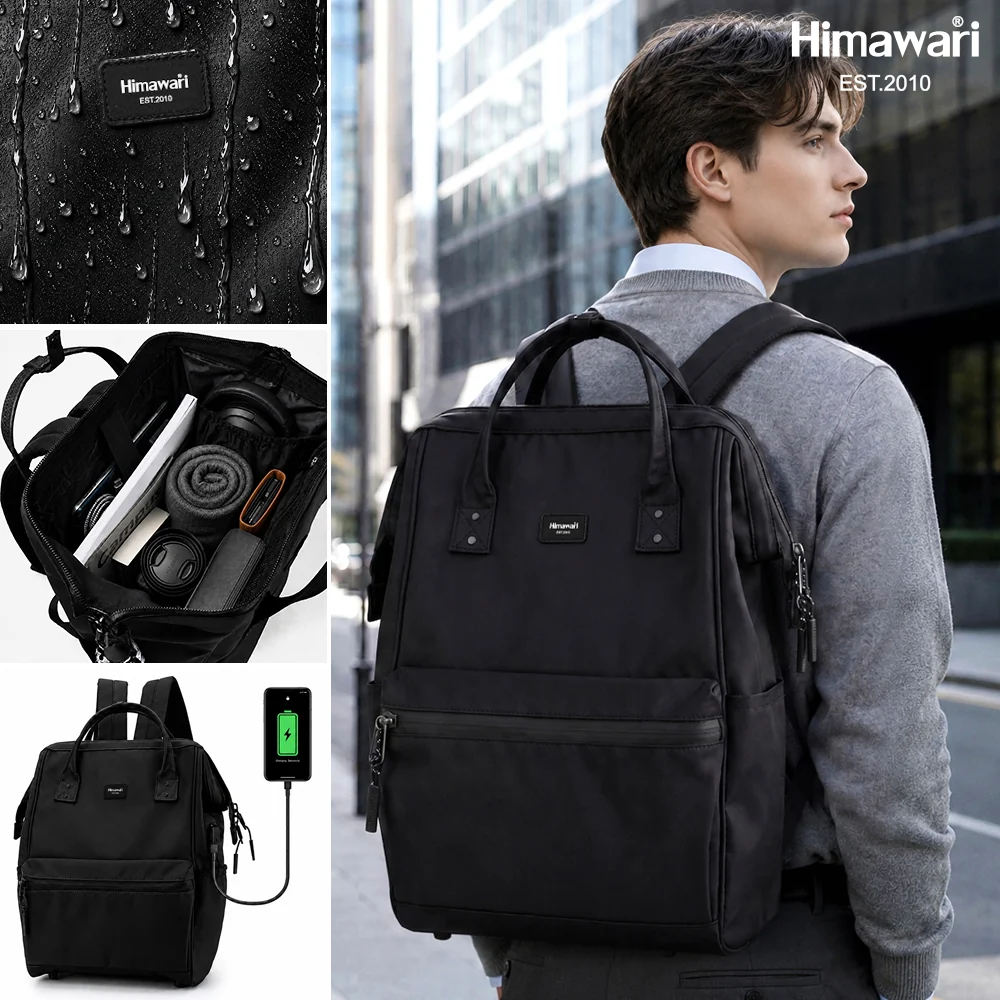

비 예보가 있는 날의 백팩: 준비물보다 먼저 확인할 것

비 예보를 보면 우산과 파우치부터 떠올리기 쉽습니다. 그러나 가방을 비에 노출하는 시간, 젖은 우산을 둘 자리, 귀가 후 말리는 순서까지 생각해야 준비가 끝납니다. 방수라는 표현만으로 모든 상황을 대신 판단하지 말고 제품 안내를 기준으로 살펴보세요.
우산을 넣을지 먼저 결정하기
젖은 우산을 가방 안에 넣는 방식은 내부 물건과 안감에 영향을 줄 수 있습니다. 전용 커버나 외부 보관이 가능한지 확인하고, 가방에 넣을 때는 물기를 최대한 털어 다른 물건과 직접 닿지 않게 합니다.
전자기기는 가방 안쪽에서 분리하기
노트북이나 태블릿은 가방의 지정 수납칸에 넣고, 젖은 물건과 같은 공간에 두지 않습니다. 비닐 하나로 완전히 보호된다고 단정하지 말고 기기 케이스와 가방 수납 구조를 함께 확인하세요.
귀가 후 젖은 부분을 확인하기
겉면이 마른 것처럼 보여도 바닥과 지퍼 주변에 물기가 남을 수 있습니다. 내용물을 꺼내 통풍이 되는 곳에서 상태를 확인하고, 관리 표시를 지키며 충분히 건조합니다. 열을 직접 가하는 방법은 소재를 손상할 수 있어 임의로 사용하지 않습니다.
다음 날 사용 전 지퍼와 끈 살피기
완전히 마른 뒤 지퍼가 부드럽게 움직이는지, 어깨끈 연결부에 이상이 없는지 확인합니다. 손상이 보이면 무리하게 메지 말고 판매처의 관리·수선 안내를 확인하세요.
출발 전 30초 체크
문을 나서기 전에 우산 커버나 비닐이 준비됐는지, 전자기기 수납칸이 닫혔는지, 바닥에 오래 닿는 끈이 없는지 확인합니다. 빗길에서 가방을 바닥에 둘 일이 있다면 내려놓을 장소도 미리 살피세요. 평소에 쓰지 않던 방법을 비 오는 날 처음 시도하기보다, 제품 안내에 맞는 익숙한 방식으로 준비하는 것이 좋습니다.
젖은 뒤에는 성능을 단정하지 않기
비를 한 번 맞은 뒤에도 겉면의 상태, 지퍼 주변, 안감의 건조 정도는 사용 환경에 따라 달라질 수 있습니다. ‘방수’ 표기만으로 모든 누수를 막거나 모든 물건을 보호한다고 볼 수는 없습니다. 이상이 반복되면 촬영한 상태와 사용 상황을 함께 정리해 판매처에 문의하세요.
참고·안내
- 2026 제품 가이드북 29페이지 · 1884L 사양
- Himawari No.1884L 제품 정보
- 실제 Himawari No.1884 블랙 제품을 참조해 새로 생성한 AI 연출 이미지입니다. 소재와 관리 방법은 제품 정보를 확인하세요.
자주 묻는 질문
방수 백팩이면 우산을 안에 넣어도 되나요?
방수 여부가 젖은 물건의 내부 보관까지 보장하는 것은 아닙니다. 제품 안내와 우산의 물기, 내부 물건을 함께 고려하세요.
젖은 가방을 드라이어로 말려도 되나요?
열과 바람이 소재에 영향을 줄 수 있으므로 제품 관리 안내를 먼저 확인하세요. 일반적으로는 통풍이 되는 그늘에서 상태를 살피며 말리는 편이 안전합니다.